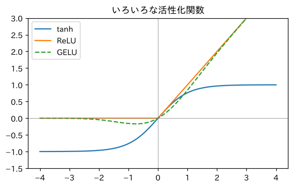

第2部 ゼロから作る · 第9章
文脈を広げる：埋め込みと多層パーセプトロン
直前8文字を見る、本物のニューラル言語モデル
おすすめは「ページを読みながら、コードを自分のノートブックに1セルずつ貼って実行」。完成ノートは困ったときの答え合わせ用です。
つくるもの
直前8文字から次の文字を予測するニューラル言語モデル（MLP）。初めて「数えるbigram」の記録を破る
身につく数学・理論
- 埋め込み（embedding）：文字を数の組（ベクトル）で表す
- ニューロンと全結合層
- 活性化関数（tanh・ReLU・GELU）となぜ非線形が必要か
- パラメータ数の数え方
- 汎化：見たことのない並びにも対応できる理由
新しく使うPython・PyTorch
classと__init__、selfnn.Moduleとforwardnn.Embeddingとnn.Lineartorch.optim.SGD（zero_gradとstep）.viewで形を変える
この章でつくるもの
第4章で「直前の文字をたくさん見ると、組み合わせが爆発して数えられない」という壁にぶつかりました。この章では、その壁を埋め込みとニューラルネットワークで越えます。直前の8文字を見て次の1文字を予測するモデルを作り、ついに「数えるbigram」の記録を破ります。2003年に発表された、ニューラル言語モデルの元祖とも言える設計です。
これまでの復習とつながり：第4章・第6章・第8章とのつながり

ミナト
8文字も見るなら、組み合わせは 通り……？ 数える気が失せる数ですね。

ボンゴ先生
だから数えない。代わりに、文字の「特徴」を学ばせる。「先」と「奥」はどちらも人を呼ぶ言葉の前に来やすい、とか、「。」の次は文の始まりだ、とかね。特徴でとらえれば、見たことのない並びでも「似たような並びは見たことがある」と推測できる。人間の読書と同じだ。
準備
いつもの準備セルです（第8章と同じ）。
import re, math, urllib.request
import torch
import torch.nn as nn
import torch.nn.functional as F
def load_soseki(file_id="773_ruby_5968"):
url = ("https://raw.githubusercontent.com/aozorahack/aozorabunko_text/0984f7dc18a2270bdfd2ff99bf14fd1b3ebb4f65/"
f"cards/000148/files/{file_id}/{file_id}.txt")
try:
with urllib.request.urlopen(url, timeout=30) as res:
text = res.read().decode("cp932")
except Exception as e:
raise RuntimeError(f"青空文庫の取得に失敗しました（時間をおいて再実行するか付録Eを参照）: {e}") from e
text = text.split("-------------------------------------------------------")[2]
text = text.split("底本：")[0]
text = re.sub(r"《.*?》", "", text)
text = re.sub(r"※?［＃.*?］", "", text)
text = text.replace("｜", "").replace("\r\n", "\n")
text = re.sub(r"\n{3,}", "\n\n", text)
return text.strip()
text = load_soseki()
chars = sorted(set(text))
V = len(chars)
stoi = {ch: i for i, ch in enumerate(chars)}
itos = {i: ch for ch, i in stoi.items()}
data = torch.tensor([stoi[c] for c in text])
n = int(len(data) * 0.9)
train_data, val_data = data[:n], data[n:]8文字の窓
文章の上に「8文字分の窓」を置いて、窓の中の8文字を入力、その次の1文字を正解にします。窓を1文字ずつずらせば、問題がたくさん作れます。
T = 8 # 窓の大きさ（何文字前まで見るか）
def get_batch(data, batch_size, g):
ix = torch.randint(0, len(data) - T, (batch_size,), generator=g) # 窓の開始位置をランダムに
x = torch.stack([data[i:i + T] for i in ix]) # 入力：8文字（stack は、同じ形のテンソルを積み重ねて1つにする）
y = data[ix + T] # 正解：その次の1文字
return x, y
g = torch.Generator().manual_seed(0)
x, y = get_batch(train_data, 4, g)
print(x.shape, y.shape)
for i in range(4):
print(repr("".join(itos[j] for j in x[i].tolist())), "→", repr(itos[y[i].item()]))torch.Size([4, 8]) torch.Size([4])
'私の注意を母より' → 'は'
'にしてやりたかっ' → 'た'
'き移ってからも、' → '当'
'を見ていた。私は' → '私'（どの窓が選ばれるかは乱数で決まります。）x の形は [4, 8]。4問ぶんの、8文字ずつの入力です。
埋め込み：文字を「点」にする
ニューラルネットワークに文字を渡すには、文字を数にしなければなりません。第6章のone-hot（2061個の数のうち1つだけ1）は、無駄が多いうえに、どの文字どうしも「同じくらい違う」ものとして扱ってしまいます。
そこで、各文字に 少数の数の組 を割り当てます。たとえば2個の数なら、各文字は平面上の1つの点になります。
torch.manual_seed(0)
C = torch.randn(V, 2) # 2061文字 × 2個の数（最初はでたらめ）
print("「先」の座標：", C[stoi["先"]])
print("「奥」の座標：", C[stoi["奥"]])
print(C[x].shape) # 4問 × 8文字 × 2個の数「先」の座標： tensor([-0.4445, 0.8185])
「奥」の座標： tensor([0.8115, 0.1629])
torch.Size([4, 8, 2])理論の小部屋：埋め込み（embedding）
文字（やトークン）ごとに割り当てた数の組（ベクトル）を 埋め込み（embedding）と言います。表 C の各行が、その文字の埋め込みです。
ポイントは、この座標も学習で決めること。最初はでたらめな位置ですが、学習が進むと「同じような場面で使われる文字」が近くに集まってくるように動いていきます。「先」と「奥」が近くに来れば、「先生と」を見て学んだことが「奥さんと」にも少し役立つようになる。数えるモデルにはできなかった 汎化（はんか、generalization：見たことのないものへの応用）が起きるのです。
実際のモデルでは、2個ではなく数十〜数千個の数を使います（この章では32個、Qwen2.5-0.5Bでは896個）。たくさんの数を使えば、「品詞っぽさ」「漢字っぽさ」「人っぽさ」……のように、たくさんの特徴を同時に表せます。
C[x] の形 [4, 8, 2] は、「4問 × 8文字 × 各文字2個の数」です。第6章で、one-hot × 表 ＝ 表の行の取り出し、でしたね。C[x] は、それを番号で直接やっています。
基礎の補足埋め込みルックアップ C[x] vs one-hot 行列積
| 比較項目 | F.one_hot(x, V).float() @ C |
C[x]（＝ nn.Embedding(V, d)(x)） |
|---|---|---|
| 計算結果 | C の x 行目を取り出す |
数学的に完全に同じ！ |
| 計算量・メモリ | 2060個の 0 にも掛け算して巨大行列を作る |
行を直接引くだけ（圧倒的に高速・省メモリ） |
| 形の変化 | [B, T] → [B, T, V] → [B, T, d] |
[B, T] → [B, T, d] |
x の1マス（文字ID）が、そのまま長さ d のベクトル（座標）に置き換わるので、形は常に [B, T] → [B, T, d] になります。
層を重ねる：多層パーセプトロン
8文字ぶんの埋め込みが手に入ったら、それを1列に並べて、計算を2段重ねます。
- 隠れ層：埋め込みを並べたもの（8文字 × 32 = 256個の数）を、256個の「ニューロン」で変換する
- 出力層：その結果から、2061文字それぞれの点数（ロジット）を出す
d, H = 32, 256 # 埋め込みの大きさ、隠れ層の大きさ
torch.manual_seed(0)
C = torch.randn(V, d)
W1 = torch.randn(T * d, H) * 0.1
b1 = torch.zeros(H)
W2 = torch.randn(H, V) * 0.1
b2 = torch.zeros(V)
emb = C[x] # [4, 8, 32]
flat = emb.view(4, T * d) # [4, 256]：8文字ぶんを横一列に並べる
h = torch.tanh(flat @ W1 + b1) # [4, 256]：隠れ層
logits = h @ W2 + b2 # [4, 2061]：次の文字の点数
print(emb.shape, flat.shape, h.shape, logits.shape)torch.Size([4, 8, 32]) torch.Size([4, 256]) torch.Size([4, 256]) torch.Size([4, 2061])Pythonの道具箱：.view と .reshape で形を変える
emb.view(4, T * d) は、中身の数はそのままで、形だけを [4, 8, 32] から [4, 256] に変えます。8文字ぶんの32個ずつを、横一列（256個）に並べ直すイメージです。-1 を使うと「残りは自動で計算して」という意味になり、emb.view(4, -1) でも同じ結果になります。なお、transpose 後などでメモリが不連続なテンソルでは .view() がエラーになるため、安全な .reshape(4, -1)（第6章・付録B）を使うこともよくあります。
基礎の補足.view(B, -1) の形の算数と、MLP全体の shape パイプライン
.view() は要素の総数を保ったまま形だけを並べ替える操作です。emb の形が [B, T, d] = [4, 8, 32] のとき：
- 総要素数は 個
emb.view(4, -1)は「第0軸を4に固定し、残りの第1軸は自動で割ってね」の意味 → （ちょうど ）！- コードで
e.view(len(x), -1)と書けば、バッチサイズBが訓練時(256)・検証時(16239)・生成時(1)で変わっても同じ1行で動きます。
MLP全体のテンソル形の流れを1本の地図で押さえておきましょう：
| ステップ | 計算 | テンソルの形（shape） |
意味 |
|---|---|---|---|
| 入力 | x |
[B, T] = [4, 8] |
問 × 直前 文字のID |
| 埋め込み | e = C[x] |
[B, T, d] = [4, 8, 32] |
各文字を 次元の座標に変換 |
| 平坦化 | flat = e.view(B, -1) |
[B, T*d] = [4, 256] |
8文字ぶんを横1列に連結 |
| 隠れ層 | h = tanh(flat @ W1 + b1) |
[B, H] = [4, 256] |
個のニューロンで特徴抽出 |
| 出力層 | logits = h @ W2 + b2 |
[B, V] = [4, 2061] |
全語彙 文字の生の点数 |
理論の小部屋：ニューロンと全結合層
flat @ W1 + b1 が、ニューラルネットワークの基本部品 全結合層（linear layer）です。数式では
と書きます。出力の1つ1つ（ニューロン）は、「入力の数それぞれに重みを掛けて全部足し、最後に （バイアス）を足したもの」です。
1つのニューロンは「どの特徴をどれくらい重視するか」の投票係のようなものです。256個のニューロンが、それぞれ違う観点で8文字を眺めて、点数をつけます。行列の掛け算 @ は、この256個のニューロンの計算を一度にやってしまう技でした（第6章）。
この「全結合層を何段か重ねたもの」を 多層パーセプトロン（multilayer perceptron、MLP）と呼びます。
なぜ tanh を挟むのか：非線形性
隠れ層の計算で、torch.tanh(…) という関数を通しています。これを 活性化関数（activation function）と言います。どんな形の関数か、見てみましょう。
!pip install -q matplotlib-fontjaimport matplotlib.pyplot as plt
import matplotlib_fontja
z = torch.linspace(-4, 4, 200)
plt.figure(figsize=(6, 3.5))
plt.plot(z, torch.tanh(z), label="tanh")
plt.plot(z, torch.relu(z), label="ReLU")
plt.plot(z, F.gelu(z), label="GELU", linestyle="--")
plt.axhline(0, color="gray", lw=0.5); plt.axvline(0, color="gray", lw=0.5)
plt.ylim(-1.5, 3)
plt.legend()
plt.title("いろいろな活性化関数")
plt.show()
数学の道具箱：なぜ非線形（tanh）が必須か：2×2の具体数で「線形崩壊」を証明する
活性化関数がないと、全結合層を何段重ねても、結局は1段の全結合層に潰れてしまいます。
具体的な2×2の数字で確かめてみましょう！ 入力 、第1層 、第2層 とします。
- 活性化なし（2段を順番に計算）：
- 第1層：
- 第2層：
- 1つの行列 に合体して1段で計算：
- （どんな を入れても完全に一致！）
import math
# 活性化なしでは (x @ W1) @ W2 == x @ (W1 @ W2) で1層に潰れる
# 一方 tanh を間に挟むと…
h = [math.tanh(1), math.tanh(4)] # [0.7616, 0.9993]（まっすぐの比率が曲がる！）
y = [h[0]*2 + h[1]*1, h[0]*(-1) + h[1]*3] # [2.5225, 2.2364] → どんな1枚の行列 W' でも再現不可！たとえば「数を2倍して、さらに3倍する」操作は、最初から「6倍する（）」操作1回と同じですよね。掛け算だけなら、何十層重ねようが結局1段に潰れてしまいます。
そこで、層と層の間に「直線ではない（非線形な）」関数を挟みます。折れ曲がったり、S字になったりする関数を途中に挟むことで、1回にまとめることができなくなり、複雑で曲がりくねった現実の言葉のパターンを自在に表現できるようになります。
- tanh（ハイパボリックタンジェント）：-1から1の間のS字。この章で使う、昔ながらの関数
- ReLU（レルー）：マイナスは0、プラスはそのまま。単純で速いので大人気
- GELU（ジェルー）：ReLUをなめらかにしたもの。GPTで使われている（第12章）
部品をまとめる：クラスで書く
ここまでの部品（C、W1、b1、W2、b2）をバラバラに持っていると、管理が大変です。PyTorchでは、モデルを クラス という設計図にまとめて書きます。
PyTorchの nn.Module に入る前に、まずはふつうのPythonだけの最小コードで class・__init__・self・継承・super().__init__() をスッキリ理解しておきましょう！
基礎の補足理解のための最小コード：PyTorchの前に「ふつうのPythonクラス」を押さえる
① 基本のクラス（設計図）と __init__・self：
関数を「部品（データ）と処理のセット」にまとめたものが クラス です。
class LinearRule: # 「LinearRule」という名前の設計図
def __init__(self, a, b): # 実物を作るときに1回だけ呼ばれる初期化関数
self.a = a # self（＝作られた実物自身）に部品 a を保存
self.b = b # 部品 b を保存
def calc(self, x): # 実物が持つメソッド（関数）
return self.a * x + self.b # 保存しておいた self.a, self.b を使って計算
rule = LinearRule(3, 1) # 設計図から実物（インスタンス）を1個作る
print(rule.calc(2)) # → 3 * 2 + 1 = 7② 継承 class 子(親): と super().__init__()：
すでにある便利な設計図（親クラス）の機能を丸ごと引き継いで、自分用の部品を足す仕組みを 継承 と呼びます。
class BaseTool:
def __init__(self):
self.registry = [] # 親が用意する管理台帳
class MyTool(BaseTool): # BaseTool の機能をそのまま引き継ぐ！
def __init__(self, scale):
super().__init__() # 親（BaseTool）の __init__ を必ず先に実行して台帳を作る
self.scale = scale
def forward(self, x):
return x * self.scale③ PyTorch の class MLP(nn.Module): との1対1対応：
class MLP(nn.Module):→ PyTorchの親クラスnn.Moduleを継承（するとmodel.parameters()や.to("cuda")やstate_dict()が全部自動で使えるようになる！）super().__init__()→ 親nn.Moduleのパラメータ管理台帳を初期化（忘れるとエラー！）self.emb = ...→ 必ずself.を付けて代入することで、台帳に部品が自動登録されるdef forward(self, x):→ 順伝播の計算。使うときはmodel.forward(x)ではなくmodel(x)と呼ぶのが作法
それでは、MLPを nn.Module のクラスにまとめてみましょう。
class MLP(nn.Module):
def __init__(self, V, T, d=32, H=256):
super().__init__()
self.emb = nn.Embedding(V, d) # 埋め込みの表（C）
self.fc1 = nn.Linear(T * d, H) # 隠れ層（W1, b1）
self.fc2 = nn.Linear(H, V) # 出力層（W2, b2）
def forward(self, x):
e = self.emb(x) # [B, T, d]
h = torch.tanh(self.fc1(e.view(len(x), -1))) # [B, H]
return self.fc2(h) # [B, V]
torch.manual_seed(0)
model = MLP(V, T)
print(model)
print("パラメータの数：", sum(p.numel() for p in model.parameters()))MLP(
(emb): Embedding(2061, 32)
(fc1): Linear(in_features=256, out_features=256, bias=True)
(fc2): Linear(in_features=256, out_features=2061, bias=True)
)
パラメータの数： 661421Pythonの道具箱：クラスは「設計図」
class MLP(nn.Module): は「MLP という名前の設計図を作る。nn.Module（PyTorchのモデルの基本形）を土台にする」という意味です。
__init__：設計図から実物を作るとき（MLP(V, T)）に最初に実行される準備。ここで部品を用意するself：作られた実物自身のこと。self.embは「この実物が持っているemb」super().__init__()：土台（nn.Module）の準備も忘れずにやる、というお約束forward：入力を受け取って出力を返す計算。model(x)と書くと、これが呼ばれる
CSSのクラスを思い出してください。.button { … } という1つの定義から、ページ中のたくさんのボタンに同じ見た目が適用されますね。Pythonのクラスも、1つの設計図から同じ仕組みの実物（インスタンス）をいくつでも作れます。
理論の小部屋：パラメータの数え方
パラメータの数を手で確かめてみましょう。全結合層は「入力の数 × 出力の数」個の重みと、「出力の数」個のバイアスを持っています。
| 部品 | 計算 | 数 |
|---|---|---|
| 埋め込み | 2061 × 32 | 65,952 |
| 隠れ層の重み＋バイアス | 256 × 256 ＋ 256 | 65,792 |
| 出力層の重み＋バイアス | 256 × 2061 ＋ 2061 | 529,677 |
| 合計 | 661,421 |
print の結果と一致しましたか？ パラメータの8割が出力層に集中していますね。語彙（2061文字）のそれぞれに点数を出すための重みが必要だからです。本物のLLMでも、語彙が15万もあると、出力層と埋め込みだけで大きな割合を占めます（第1章のQwenでは、約4.9億個のうち約1.4億個が埋め込み）。
学習させる
学習ループは第8章とほぼ同じです。今回は、パラメータの更新を オプティマイザ（optimizer）という道具に任せます。
@torch.no_grad()
def val_loss(model):
X = torch.stack([val_data[i:i + T] for i in range(len(val_data) - T)])
Y = val_data[T:]
return F.cross_entropy(model(X), Y).item()
torch.manual_seed(0)
g = torch.Generator().manual_seed(0)
model = MLP(V, T)
optimizer = torch.optim.SGD(model.parameters(), lr=0.1)
for step in range(10001):
x, y = get_batch(train_data, 256, g)
loss = F.cross_entropy(model(x), y)
optimizer.zero_grad() # 勾配を0に
loss.backward() # 勾配を計算
optimizer.step() # パラメータを更新
if step % 2000 == 0:
print(f"ステップ {step:5d}：訓練 {loss.item():.3f} 検証 {val_loss(model):.3f}")ステップ 0：訓練 7.659 検証 7.662
ステップ 2000：訓練 3.594 検証 3.919
ステップ 4000：訓練 3.591 検証 3.677
ステップ 6000：訓練 3.178 検証 3.532
ステップ 8000：訓練 3.333 検証 3.448
ステップ 10000：訓練 2.734 検証 3.395CPUで2分ほどかかります。コーヒーでも淹れてきてください。……戻ってきましたか？ 検証損失が 3.395。数えるbigramの3.581を、ついに破りました！
Pythonの道具箱：オプティマイザ
optimizer.zero_grad() → loss.backward() → optimizer.step() の3行は、第7章で手で書いた「勾配を0に → 勾配を計算 → w -= lr * w.grad」と同じことをしています。torch.optim.SGD は、モデルの全パラメータについて、まとめて w -= lr * w.grad をやってくれる係です。
@torch.no_grad() を関数の上に付けると、その関数の中身全体が with torch.no_grad(): の中にあるのと同じになります（関数の上に置く @ は デコレータ という印で、第6章の行列の掛け算の @ とは別物です）。
記録表を更新
| モデル | 章 | 検証データの損失 |
|---|---|---|
| でたらめ | 5 | 7.631 |
| bigram（数える） | 5 | 3.581 |
| ニューラルbigram | 8 | 3.685 |
| MLP（直前8文字、SGD 1万ステップ） | 9 | 3.395 |
書かせてみる
窓を1文字ずつずらしながら生成します。最初の8文字は自分で与えます。
@torch.no_grad()
def generate(model, start, n=100, seed=0):
g = torch.Generator().manual_seed(seed)
ids = [stoi[c] for c in start]
for _ in range(n):
x = torch.tensor([ids[-T:]]) # 直前8文字
probs = F.softmax(model(x), dim=1)[0]
ids.append(torch.multinomial(probs, 1, generator=g).item())
return "".join(itos[i] for i in ids)
print(generate(model, "私はその人を常に"))私はその人を常によう加打で返事が物った。先生と奥さんはたしようで。ただの光をある時がら見た。
「今は他いに私を煎にかず話する果べ橋当に告配夫明問にする親ないでも事去上かに故このよに冷座来なく遥えますか」
奥さんまし「返事が」「先生と奥さんは」「ただの光を」。bigramよりも、言葉のまとまりがずっと自然になりました。かぎかっこ「 」も閉じていますが、これはたまたまです。開いたかぎかっこから閉じるまで50文字ほどあり、直前8文字しか見えないこのモデルは、かぎかっこを開いたことを覚えていられません。遠くまで覚えておく仕組みは、第11章で作ります。……中身は相変わらず支離滅裂ですが、一歩前進です。
訓練と検証の差に注目
学習の出力をもう一度見てください。最後の訓練損失は2.734、検証損失は3.395。訓練のほうがずっと良いですね。
理論の小部屋：汎化のギャップ
訓練データでは良くて、検証データではそれほどでもない。これは、モデルが訓練データのクセを覚え始めているサインです。第5章の「過去問の丸暗記」が始まっているのです。
- 訓練損失と検証損失がどちらも下がっている → 順調
- 訓練損失だけ下がって、検証損失が下がらない（または上がる） → 過学習（丸暗記）
『こころ』は16万字しかないので、66万個のパラメータを持つモデルにとっては、丸暗記できてしまう量なのです。次の章では、この過学習と戦う方法を含め、学習を上手に進める技をまとめて学びます。
もっと深く2003年の元祖ニューラル言語モデル
この章のモデルは、ヨシュア・ベンジオらが2003年に発表した論文「A Neural Probabilistic Language Model」の設計とほぼ同じです。彼らは単語の埋め込みと、このMLPを使って、それまで主流だったn-gramモデルを上回る成績を出しました。当時のコンピュータでは学習に何週間もかかったそうです。あなたはColabで2分。20年の進歩を感じますね。
つまずき注意：よくあるつまずき
RuntimeError: mat1 and mat2 shapes cannot be multiplied (4x512 and 256x256)：形が合っていません。T（窓の大きさ）やdを変えたときは、MLP(V, T)を作り直しているか確認しましょう。エラーの数字（4x512と256x256）から、どこがずれているか推理できます。RuntimeError: mat1 and mat2 shapes cannot be multiplied (1x256 and 512x256)（書かせるときに出る）：書き出しの文字数が、窓の大きさTより短いです。書き出しをT文字以上にしましょう。TypeError: __init__() missing … argument：MLP(V, T)のように、必要な引数を渡し忘れています。AttributeError: 'MLP' object has no attribute …：self.を付け忘れて部品を作ると、モデルに部品が登録されません。
やってみよう：窓の大きさを変えてみよう
「8文字の窓」の節のセルにある T = 8 を、T = 3 や T = 16 に変えて、そのセルから下を順に実行し直してみましょう（モデルも作り直されます）。T = 16 にしたら、書かせるときの書き出しも16文字以上にしてください（例：generate(model, "私はその人を常に先生と呼んでいた。")）。書き出しが窓より短いと、形が合わないエラーになります。窓が大きいほど検証損失は下がるでしょうか？ 予想してから試してください。（ヒント：大きければいいとは限りません。データが16万字しかないことを思い出して。）
できたらチェック
まとめ
- 埋め込み：文字ごとに学習可能な数の組を割り当てる。似た文字が近づき、汎化が生まれる
- 全結合層 を、活性化関数（非線形）を挟んで重ねたものが MLP
- PyTorchでは、モデルを
nn.Moduleの クラス で書く。__init__で部品、forwardで計算 - 直前8文字を見るMLPで、検証損失3.395。数えるbigram（3.581）を超えた
- 訓練と検証の損失の差は、過学習の始まりのサイン
ボンゴ先生
次の章は「学習のお医者さん」。学習がうまくいかないとき、何を診ればいいか。初期化、正規化、Adam、学習率スケジュール、ドロップアウト……GPTを学習させる前に必要な道具を、一気に救急箱に詰め込もう。
説明の読了チェックです（ブラウザ内にのみ保存）。「理解・定着」は途中の確認問題・自力実装・間隔復習の結果と合わせて記録されます。